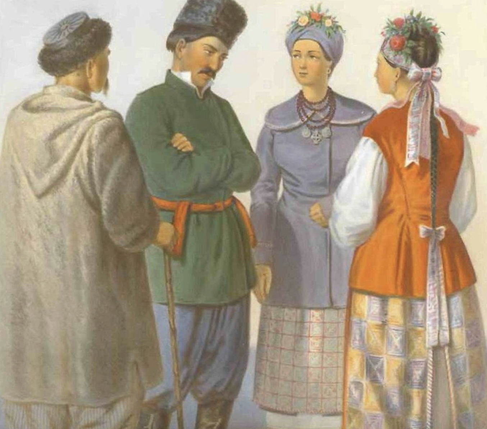
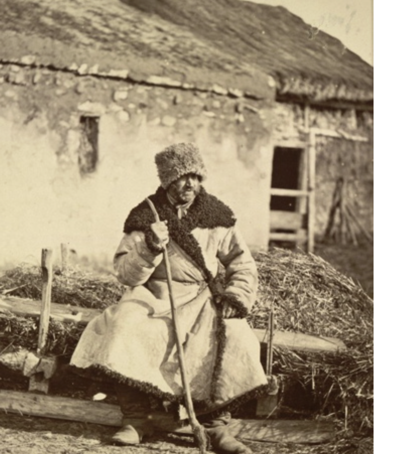

Малороссы исторически говорили на украинском языке, который имеет свои диалекты. Это важная часть национальной идентичности, и многие малоруссы гордятся своим родным языком.
Малороссы исторически говорили на украинском языке, который имеет свои диалекты. Это важная часть национальной идентичности, и многие малоруссы гордятся своим родным языком.
В традиционной малороссийской культуре одежда имеет ярко выраженный этнический характер. Это может включать в себя вышиванки (ручной работы вышиванные рубашки), национальные вышитые пояса, платки для женщин и традиционные головные уборы.
Традиционно, малорусский быт тесно связан с земледелием и сельской жизнью. Семейные ценности, коллективизм и традиции играют важную роль в повседневной жизни.
Большинство малороссов исповедуют православие. Религиозные обряды, церковные праздники и традиции имеют важное значение в их жизни. Также встречаются элементы народной магии и поверий.
Малорусская литература богата фольклором и народными балладами. Традиционная поэзия, такая как "думы" и "кобзарство" (исполнение на кобзе), являются важными частями литературного наследия. Современная украинская литература также продолжает развиваться, отражая современные темы и вызовы.
|  |  |